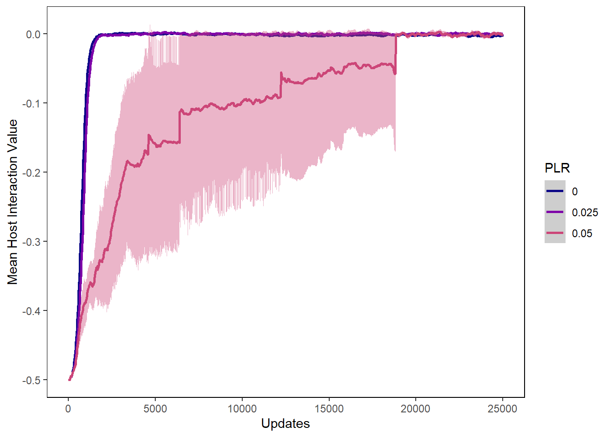
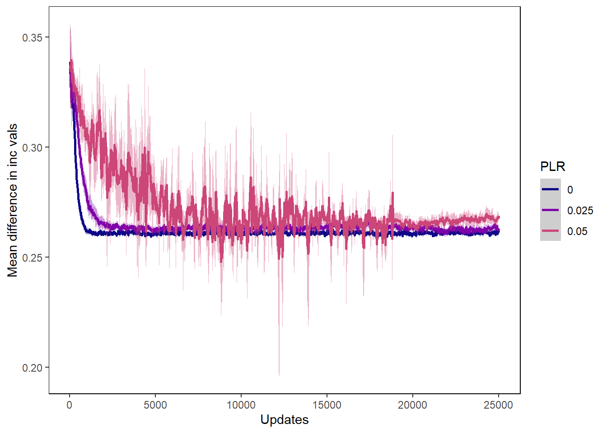
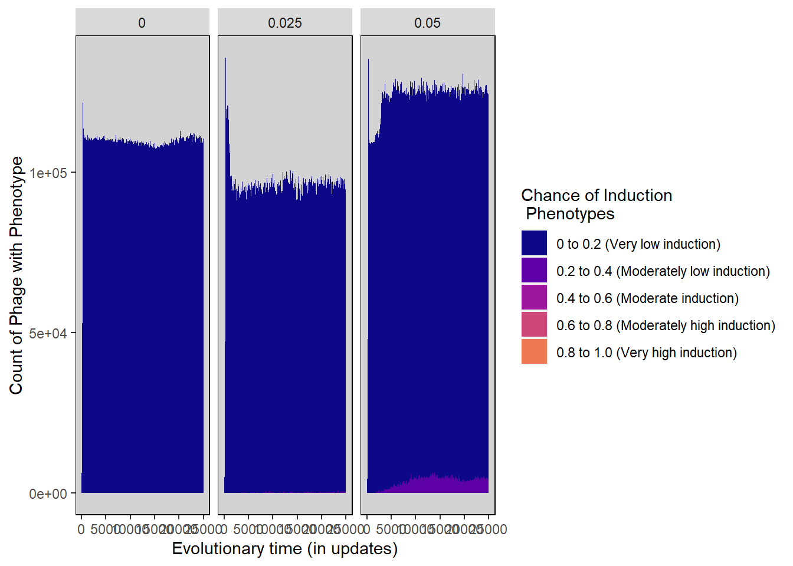

Chapter 9 Induction and Benefit with Random Starting Incorporation Vals
9.1 Gather Settings and Treatments
General settings
folder <- "Data/InductionAndBenefit_RandomIncVals/" #Folder where datafiles are
treatments <- c("PLR") #Names of the treatments being tested - should match what is in filenamesStacked histogram settings
induction_separate_by <- "PLR" #Facet wrap induction stacked histogram by Prophage Loss Rate
#How induction stacked histogram bins should be collapsed and renamed
induction_histogram_bins <- c(Hist_0.0 = "0 to 0.2 (Very low induction)",
Hist_0.1 = "0 to 0.2 (Very low induction)",
Hist_0.2 = "0.2 to 0.4 (Moderately low induction)",
Hist_0.3 = "0.2 to 0.4 (Moderately low induction)",
Hist_0.4 = "0.4 to 0.6 (Moderate induction)",
Hist_0.5 = "0.4 to 0.6 (Moderate induction)",
Hist_0.6 = "0.6 to 0.8 (Moderately high induction)",
Hist_0.7 = "0.6 to 0.8 (Moderately high induction)",
Hist_0.8 = "0.8 to 1.0 (Very high induction)",
Hist_0.9 = "0.8 to 1.0 (Very high induction)")
lysis_separate_by <- "PLR" #Facet wrap lysis chance stacked histogram by Prophage Loss Rate
#How lysis chance stacked histogram bins should be collapsed and renamed
lysis_histogram_bins <- c(Hist_0.0 = "0 to 0.2 (Highly lysogenic)",
Hist_0.1 = "0 to 0.2 (Highly lysogenic)",
Hist_0.2 = "0.2 to 0.4 (Moderately lysogenic)",
Hist_0.3 = "0.2 to 0.4 (Moderately lysogenic)",
Hist_0.4 = "0.4 to 0.6 (Temperate)",
Hist_0.5 = "0.4 to 0.6 (Temperate)",
Hist_0.6 = "0.6 to 0.8 (Moderately lytic)",
Hist_0.7 = "0.6 to 0.8 (Moderately lytic)",
Hist_0.8 = "0.8 to 1.0 (Highly lytic)",
Hist_0.9 = "0.8 to 1.0 (Highly lytic)")
incorp_diff_separate_by <- "PLR"
incorp_diff_histogram_bins <- c(Hist_0.0 = "0 to 0.2 (Highly beneficial)",
Hist_0.1 = "0 to 0.2 (Highly beneficial)",
Hist_0.2 = "0.2 to 0.4 (Moderately beneficial)",
Hist_0.3 = "0.2 to 0.4 (Moderately beneficial)",
Hist_0.4 = "0.4 to 0.6 (Neutral)",
Hist_0.5 = "0.4 to 0.6 (Neutral)",
Hist_0.6 = "0.6 to 0.8 (Moderately detrimental)",
Hist_0.7 = "0.6 to 0.8 (Moderately detrimental)",
Hist_0.8 = "0.8 to 1.0 (Highly detrimental)",
Hist_0.9 = "0.8 to 1.0 (Highly detrimental)")9.2 Munge Data
Gather filenames
all_filenames <- list.files(folder)
freeliving_filenames <- str_subset(all_filenames, "FreeLivingSyms")
hostval_filenames <- str_subset(all_filenames, "HostVals")
incvaldiffs_filenames <- str_subset(all_filenames, "IncValDifferences")
induction_filenames <- str_subset(all_filenames, "InductionChance")
lysischance_filenames <- str_subset(all_filenames, "LysisChance")
phagevals_filenames <- str_subset(all_filenames, "SymVals")Combine time series data for all subsets of datafiles
freeliving <- combine_time_data(freeliving_filenames, folder, treatments)
hostvals <- combine_time_data(hostval_filenames, folder, treatments)
incvalsdiffs <- combine_time_data(incvaldiffs_filenames, folder, treatments)
inductionchances <- combine_time_data(induction_filenames, folder, treatments)
lysischances <- combine_time_data(lysischance_filenames, folder, treatments)
phagevals <- combine_time_data(phagevals_filenames, folder, treatments)Rearrange time series data into stacked histogram data
induction_histdata <- combine_histogram_data(inductionchances,
induction_separate_by,
induction_histogram_bins)
lysis_histdata <- combine_histogram_data(lysischances,
lysis_separate_by,
lysis_histogram_bins)
incorp_diff_histdata <- combine_histogram_data(incvalsdiffs,
incorp_diff_separate_by,
incorp_diff_histogram_bins)9.3 Create Graphs
9.3.1 Host graphs
Host count
hostcount_plot <- ggplot(data=hostvals,
aes(x=update, y=count,
group=PLR, colour=PLR)) +
ylab("Host Count") + xlab("Updates") +
stat_summary(aes(color=PLR, fill=PLR),
fun.data="mean_cl_boot", geom=c("smooth"), se=TRUE) +
theme(panel.background = element_rect(fill='white', colour='black')) +
theme(panel.grid.major = element_blank(), panel.grid.minor = element_blank()) +
guides(fill="none") + scale_colour_manual(values=plasma(nlevels(hostvals$PLR)+2)) +
scale_fill_manual(values=plasma(nlevels(hostvals$PLR)+2))
hostcount_plotHost cfu count
hostcount_cfu_plot <- ggplot(data=hostvals, aes(x=update, y=cfu_count,
group=PLR, colour=PLR)) +
ylab("Host CFU Count") + xlab("Updates") +
stat_summary(aes(color=PLR, fill=PLR),
fun.data="mean_cl_boot", geom=c("smooth"), se=TRUE) +
theme(panel.background = element_rect(fill='white', colour='black')) +
theme(panel.grid.major = element_blank(), panel.grid.minor = element_blank()) +
guides(fill="none") + scale_colour_manual(values=plasma(nlevels(hostvals$PLR)+2)) +
scale_fill_manual(values=plasma(nlevels(hostvals$PLR)+2))
hostcount_cfu_plotHost uninfected count
host_uninfected_plot <- ggplot(data=hostvals, aes(x=update, y=uninfected_host_count,
group=PLR, colour=PLR)) +
ylab("Uninfected Host Count") + xlab("Updates") +
stat_summary(aes(color=PLR, fill=PLR),
fun.data="mean_cl_boot", geom=c("smooth"), se=TRUE) +
theme(panel.background = element_rect(fill='white', colour='black')) +
theme(panel.grid.major = element_blank(), panel.grid.minor = element_blank()) +
guides(fill="none") + scale_colour_manual(values=plasma(nlevels(hostvals$PLR)+2)) +
scale_fill_manual(values=plasma(nlevels(hostvals$PLR)+2))
host_uninfected_plotHost int vals
hostvals_plot <- ggplot(data=hostvals, aes(x=update, y=mean_intval,
group=PLR, colour=PLR)) +
ylab("Mean Host Interaction Value") + xlab("Updates") +
stat_summary(aes(color=PLR, fill=PLR),
fun.data="mean_cl_boot", geom=c("smooth"), se=TRUE) +
theme(panel.background = element_rect(fill='white', colour='black')) +
theme(panel.grid.major = element_blank(), panel.grid.minor = element_blank()) +
guides(fill="none") + scale_colour_manual(values=plasma(nlevels(hostvals$PLR)+2)) +
scale_fill_manual(values=plasma(nlevels(hostvals$PLR)+2))
hostvals_plot## Warning: Removed 4067 rows containing non-finite values (stat_summary).
9.3.2 Phage graphs
Phage count
phagecount_plot <- ggplot(data=lysischances,
aes(x=update, y=count,
group=PLR, color=PLR)) +
ylab("Phage count") + xlab("Updates") +
stat_summary(aes(color=PLR, fill=PLR),
fun.data="mean_cl_boot", geom=c("smooth"), se=TRUE) +
theme(panel.background = element_rect(fill='white', colour='black')) +
theme(panel.grid.major = element_blank(), panel.grid.minor = element_blank()) +
guides(fill="none") + scale_colour_manual(values=plasma(nlevels(lysischances$PLR)+2)) +
scale_fill_manual(values=plasma(nlevels(lysischances$PLR)+2))
phagecount_plot
Phage int val
phageintval_plot <- ggplot(data=phagevals, aes(x=update, y=mean_intval,
group=PLR, color=PLR)) +
ylab("Phage Interaction value") + xlab("Updates") +
stat_summary(aes(color=PLR, fill=PLR),
fun.data="mean_cl_boot", geom=c("smooth"), se=TRUE) +
theme(panel.background = element_rect(fill='white', colour='black')) +
theme(panel.grid.major = element_blank(), panel.grid.minor = element_blank()) +
guides(fill="none") + scale_colour_manual(values=plasma(nlevels(phagevals$PLR)+2)) +
scale_fill_manual(values=plasma(nlevels(phagevals$PLR)+2))
phageintval_plotChance of lysis
lysischances_plot <- ggplot(data=lysischances,
aes(x=update, y=mean_lysischance,
group=PLR, color=PLR)) +
ylab("Mean chance of lysis") + xlab("Updates") +
stat_summary(aes(color=PLR, fill=PLR),
fun.data="mean_cl_boot", geom=c("smooth"), se=TRUE) +
theme(panel.background = element_rect(fill='white', colour='black')) +
theme(panel.grid.major = element_blank(), panel.grid.minor = element_blank()) +
guides(fill="none") + scale_colour_manual(values=plasma(nlevels(lysischances$PLR)+2)) +
scale_fill_manual(values=plasma(nlevels(lysischances$PLR)+2))
lysischances_plotChance of induction
inductionchances_plot <- ggplot(data=inductionchances,
aes(x=update, y=mean_inductionchance,
group=PLR, color=PLR)) +
ylab("Mean chance of induction") + xlab("Updates") +
stat_summary(aes(color=PLR, fill=PLR),
fun.data="mean_cl_boot", geom=c("smooth"), se=TRUE) +
theme(panel.background = element_rect(fill='white', colour='black')) +
theme(panel.grid.major = element_blank(), panel.grid.minor = element_blank()) +
guides(fill="none") + scale_colour_manual(values=plasma(nlevels(inductionchances$PLR)+2)) +
scale_fill_manual(values=plasma(nlevels(inductionchances$PLR)+2))
inductionchances_plotMean difference in incorporation vals
incorp_diff_plot <- ggplot(data=incvalsdiffs,
aes(x=update, y=mean_incval_difference),
group=PLR, color=PLR) +
ylab("Mean difference in inc vals") + xlab("Updates") +
stat_summary(aes(color=PLR, fill=PLR),
fun.data="mean_cl_boot", geom=c("smooth"), se=TRUE) +
theme(panel.background = element_rect(fill='white', colour='black')) +
theme(panel.grid.major = element_blank(), panel.grid.minor = element_blank()) +
guides(fill="none") + scale_colour_manual(values=plasma(nlevels(incvalsdiffs$PLR)+2)) +
scale_fill_manual(values=plasma(nlevels(incvalsdiffs$PLR)+2))
incorp_diff_plot## Warning: Removed 4100 rows containing non-finite values (stat_summary).
9.3.3 Stacked Histograms
Chance of lysis stacked histogram
lysischance_stackedhistogram <- ggplot(lysis_histdata,
aes(update, count)) +
geom_area(aes(fill=Histogram_bins), position='stack') +
ylab("Count of Phage with Phenotype") + xlab("Evolutionary time (in updates)") +
scale_fill_manual("Chance of Lysis\n Phenotypes",values=plasma(nlevels(lysis_histdata$Histogram_bins)+2)) +
facet_wrap(~treatment) +
theme(panel.background = element_rect(fill='light grey', colour='black')) +
theme(panel.grid.major = element_blank(), panel.grid.minor = element_blank()) +
guides(fill="none") + guides(fill = guide_legend())
lysischance_stackedhistogramChance of induction stacked histogram
inductionchance_stackedhistogram <- ggplot(induction_histdata,
aes(update, count)) +
geom_area(aes(fill=Histogram_bins), position='stack') +
ylab("Count of Phage with Phenotype") + xlab("Evolutionary time (in updates)") +
scale_fill_manual("Chance of Induction\n Phenotypes",
values=plasma(nlevels(induction_histdata$Histogram_bins)+2)) +
facet_wrap(~treatment) +
theme(panel.background = element_rect(fill='light grey', colour='black')) +
theme(panel.grid.major = element_blank(), panel.grid.minor = element_blank()) +
guides(fill="none") + guides(fill = guide_legend())
inductionchance_stackedhistogram
Difference in inc vals stacked histogram
incorp_diff_stackedhistogram <- ggplot(incorp_diff_histdata,
aes(update, count)) +
geom_area(aes(fill=Histogram_bins), position='stack') +
ylab("Count of Phage with Phenotype") + xlab("Evolutionary time (in updates)") +
scale_fill_manual("Difference in \n Incorporation Vals",
values=plasma(nlevels(incorp_diff_histdata$Histogram_bins)+2)) +
facet_wrap(~treatment) +
theme(panel.background = element_rect(fill='light grey', colour='black')) +
theme(panel.grid.major = element_blank(), panel.grid.minor = element_blank()) +
guides(fill="none") + guides(fill = guide_legend())
incorp_diff_stackedhistogram